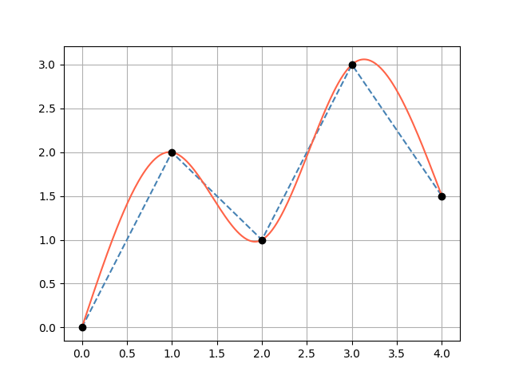

Scalar Functions (2D)
The Function2D interface represents a scalar function f(x) → Double and is the foundation for splines, parametric curves, and Bézier curves.
Function2D interface
interface Function2D {
operator fun invoke(x: Double): Double
operator fun invoke(xArray: DoubleArray): List<Double>
operator fun invoke(xCollection: Collection<Double>): List<Double>
fun derivative(x: Double): Double
fun integrate(xStart: Double, xEnd: Double): Double
fun tangentDirection(x: Double): Direction2D
fun normalDirection(x: Double): Direction2D
}Polynomial
A polynomial whose coefficients are ordered from the lowest degree to the highest:
Polynomial([a0, a1, a2, a3]) = a0 + a1·x + a2·x² + a3·x³import plane.functions.Polynomial
// p(x) = 1 + 2x + 3x²
val p = Polynomial(listOf(1.0, 2.0, 3.0))
println(p(2.0)) // 1 + 4 + 12 = 17.0
println(p.order) // 2Derivative and integral
val p = Polynomial(listOf(1.0, 2.0, 3.0)) // 1 + 2x + 3x²
// Analytical derivative → 2 + 6x
val dp = p.derivative()
println(dp(1.0)) // 8.0
// Analytical indefinite integral (integration constant = 0)
val ip = p.integral()
// Definite integral between bounds
val area = p.integrate(0.0, 2.0)Arithmetic between polynomials
val p1 = Polynomial(listOf(1.0, 2.0)) // 1 + 2x
val p2 = Polynomial(listOf(0.0, 1.0)) // x
val sum = p1 + p2 // 1 + 3x
val product = p1 * p2 // x + 2x²
val squared = p1 pow 2 // (1 + 2x)²Scalar arithmetic
val p = Polynomial(listOf(1.0, 2.0, 3.0))
val shifted = p + 5.0 // adds 5 to the constant term
val scaled = p * 2.0 // multiplies every coefficient by 2
val halved = p / 2.0LinearSpline
Piecewise linear interpolation through a set of Point2D nodes. x-values must be strictly ascending.
import plane.functions.LinearSpline
import plane.elements.Point2D
val spline = LinearSpline(listOf(
Point2D(0.0, 0.0),
Point2D(1.0, 2.0),
Point2D(2.0, 1.0),
Point2D(3.0, 3.0)
))
println(spline(0.5)) // 1.0 (midpoint of first segment)
println(spline.derivative(0.5)) // 2.0 (slope of first segment)
println(spline.integrate(0.0, 3.0))Note
The derivative is constant within each segment and undefined at knots (returns the slope of the left segment).
CubicSpline
A natural cubic spline (second derivative = 0 at both endpoints) fitted through a set of Point2D nodes. Requires at least 4 points with strictly ascending x-values.
Each segment between two consecutive knots is represented as a Polynomial of degree ≤ 3.
import plane.functions.CubicSpline
import plane.elements.Point2D
val spline = CubicSpline(listOf(
Point2D(0.0, 0.0),
Point2D(1.0, 2.0),
Point2D(2.0, 1.5),
Point2D(3.0, 3.0),
Point2D(4.0, 1.0)
))
val y = spline(1.5) // interpolated value
val slope = spline.derivative(1.5) // smooth first derivative
val area = spline.integrate(0.0, 4.0)Accessing the underlying polynomials
spline.polynomials.forEachIndexed { i, poly ->
println("Segment $i: coefficients = ${poly.coefficients}")
}Visualization
// requires geomez-visualization
spline.plot()The blue dashed line shows a LinearSpline and the red line a CubicSpline through the same knot points (black dots):

Tangent and normal directions
All Function2D implementations expose:
val spline = CubicSpline(points)
// Unit tangent direction at x = 1.5
val tangent = spline.tangentDirection(1.5) // Direction2D
// Unit normal direction (perpendicular, anti-clockwise)
val normal = spline.normalDirection(1.5) // Direction2D